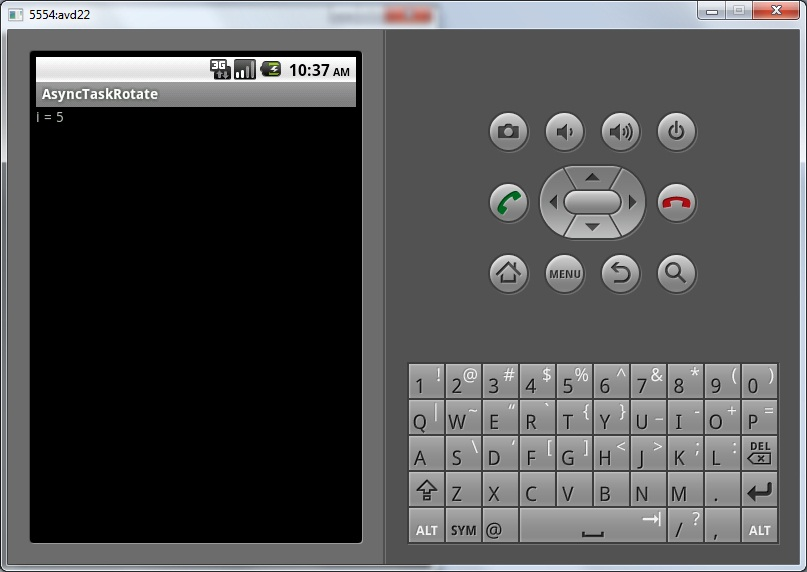
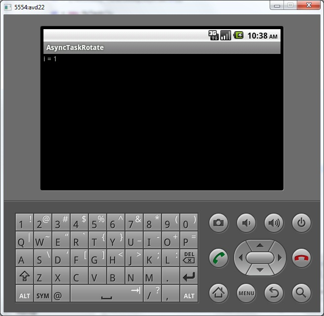
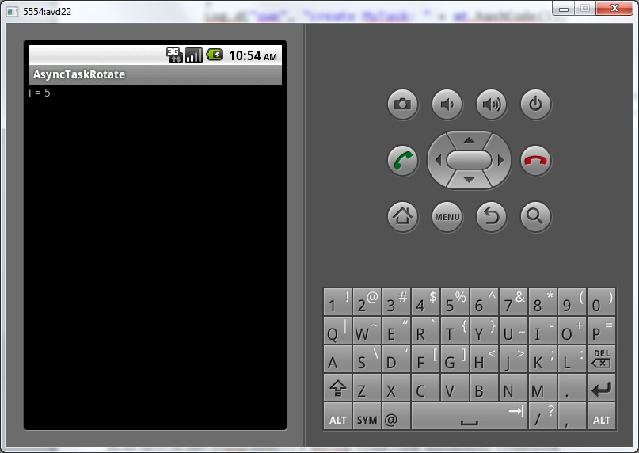
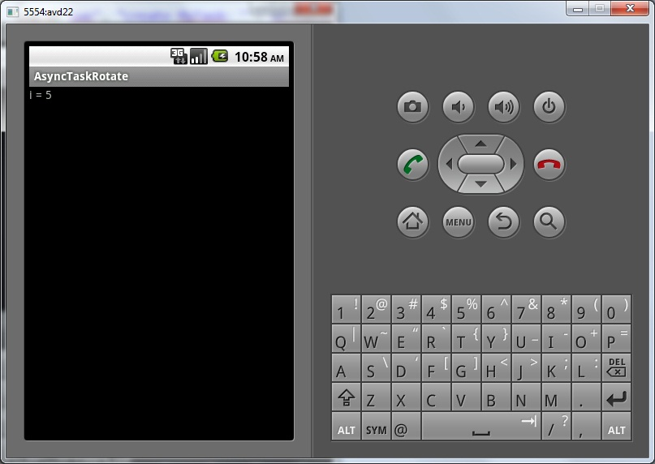
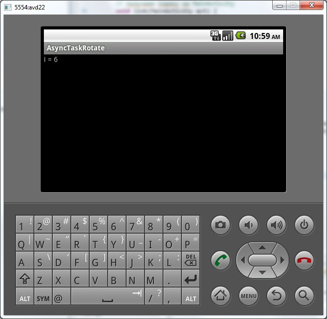

В этом уроке:
- сохраняем связь с AsyncTask при повороте экрана
Для полного понимания урока желательно знать, что такое внутренние классы и static объекты.
В прошлых уроках мы в Activity создавали внутренний класс, наследующий AsyncTask. Далее мы по нажатию кнопки создавали экземпляр этого класса и работали с ним. Все бы хорошо … но, если мы повернем экран, Activity будет создано заново, все прошлые объекты будут потеряны. В том числе мы потеряем и ссылку на наш созданный AsyncTask. А сам AsyncTask будет работать со старым Activity и держать его в памяти, т.к. объект внутреннего класса (AsyncTask) содержит скрытую ссылку на объект внешнего класса (Activity).
Давайте в этом убедимся и разберемся, как это пофиксить.
Создадим проект:
Project name: P0911_AsyncTaskRotate
Build Target: Android 4.0
Application name: AsyncTaskRotate
Package name: ru.startandroid.develop.p0911asynctaskrotate
Create Activity: MainActivity
main.xml:
<?xml version="1.0" encoding="utf-8"?>
<LinearLayout
xmlns:android="http://schemas.android.com/apk/res/android"
android:layout_width="fill_parent"
android:layout_height="fill_parent"
android:orientation="vertical">
<TextView
android:id="@+id/tv"
android:layout_width="fill_parent"
android:layout_height="wrap_content"
android:text="">
</TextView>
</LinearLayout>MainActivity.java:
import java.util.concurrent.TimeUnit;
import android.app.Activity;
import android.os.AsyncTask;
import android.os.Bundle;
import android.util.Log;
import android.widget.TextView;
public class MainActivity extends Activity {
MyTask mt;
TextView tv;
public void onCreate(Bundle savedInstanceState) {
super.onCreate(savedInstanceState);
setContentView(R.layout.main);
Log.d("qwe", "create MainActivity: " + this.hashCode());
tv = (TextView) findViewById(R.id.tv);
mt = new MyTask();
Log.d("qwe", "create MyTask: " + mt.hashCode());
mt.execute();
}
class MyTask extends AsyncTask<String, Integer, Void> {
@Override
protected Void doInBackground(String... params) {
try {
for (int i = 1; i <= 10; i++) {
TimeUnit.SECONDS.sleep(1);
publishProgress(i);
Log.d("qwe", "i = " + i
+ ", MyTask: " + this.hashCode()
+ ", MainActivity: " + MainActivity.this.hashCode());
}
} catch (InterruptedException e) {
e.printStackTrace();
}
return null;
}
@Override
protected void onProgressUpdate(Integer... values) {
super.onProgressUpdate(values);
tv.setText("i = " + values[0]);
}
}
}Обычный AsyncTask, который в цикле выполняет паузы (1 сек.) и в TextView на экране пишет номер (i) итерации цикла.
Из необычного здесь можно отметить то, что мы используем метод hashCode. Этот метод возвращает хэш-код объекта. Сейчас не будем вникать что это и зачем нужно. Главное, надо знать, что разным объектам соответствует разный хэш-код. Т.е. по хэш-коду мы будем отличать объекты друг от друга (можно воспринимать хэш-код, как некий ID).
Мы при создании MainActivity и MyTask пишем в лог их хэш-коды. Затем при выполнении задачи, мы также будем писать в лог хэш-коды этих объектов. Сейчас станет понятно, зачем это нужно.
Все сохраним и запускаем приложение. Оно сразу запускает задачу, которая раз в секунду выдает на экран номер итерации цикла. Дождемся пока на экране появится, например, 5

и повернем экран (CTRL+F12 или CTRL+F11)

Отсчет снова пошел с единицы.
Дождемся конца отсчета и посмотрим в логи. Буду выдавать их частями и каментить:
create MainActivity: 1156854488
create MyTask: 1156875480
Создались объекты и мы видим их хэш-коды.
Далее начинает работу MyTask
i = 1, MyTask: 1156875480, MainActivity: 1156854488
i = 2, MyTask: 1156875480, MainActivity: 1156854488
i = 3, MyTask: 1156875480, MainActivity: 1156854488
i = 4, MyTask: 1156875480, MainActivity: 1156854488
i = 5, MyTask: 1156875480, MainActivity: 1156854488
Выводит в лог номер итерации и хэш-коды – свой и MainActivity, с которым он работает. Хэш-коды совпадают с теми, что ранее вывелись в лог при создании. Тут все ясно.
Теперь мы поворачиваем экран.
create MainActivity: 1156904328
create MyTask: 1156916144
Создается новое MainActivity и в нем создается новый MyTask. Их хэш-коды (1156904328 и 1156916144) отличаются от хэш-кодов старых MainActivity и MyTask (1156854488 и 1156875480). Т.е. это совершенно другие, новые объекты.
i = 6, MyTask: 1156875480, MainActivity: 1156854488
i = 7, MyTask: 1156875480, MainActivity: 1156854488
i = 1, MyTask: 1156916144, MainActivity: 1156904328
i = 8, MyTask: 1156875480, MainActivity: 1156854488
i = 2, MyTask: 1156916144, MainActivity: 1156904328
i = 9, MyTask: 1156875480, MainActivity: 1156854488
i = 3, MyTask: 1156916144, MainActivity: 1156904328
i = 10, MyTask: 1156875480, MainActivity: 1156854488
i = 4, MyTask: 1156916144, MainActivity: 1156904328
i = 5, MyTask: 1156916144, MainActivity: 1156904328
i = 6, MyTask: 1156916144, MainActivity: 1156904328
i = 7, MyTask: 1156916144, MainActivity: 1156904328
i = 8, MyTask: 1156916144, MainActivity: 1156904328
i = 9, MyTask: 1156916144, MainActivity: 1156904328
i = 10, MyTask: 1156916144, MainActivity: 1156904328
Мы видим, как продолжает работать старый MyTask (1156875480), и работает он со старым MainActivity (1156854488), продолжая отсчет от 6 до 10.
А параллельно с ним работает новый MyTask (1156916144) с новым MainActivity (1156904328), он начал с 1. На экране мы видим именно работу этих новых объектов. Поэтому цифры в TextView снова пошли с единицы. А старые объекты продолжают существовать где-то в памяти и работать. Но главное то, что мы потеряли связь со старым MyTask, создалась новая задача и работа пошла сначала.
Каждый раз начинать задачу заново при повороте экрана – это получится кривое приложение. Будем фиксить. Нам надо при создании нового Activity как-то получать ссылку на старый MyTask и не создавать новый, чтобы не начинать работу с начала, а продолжать ее. В этом нам помогут методы onRetainNonConfigurationInstance и getLastNonConfigurationInstance. О них можно прочесть в уроке 70.
Добавим в класс MainActivity реализацию метода onRetainNonConfigurationInstance:
public Object onRetainNonConfigurationInstance() {
return mt;
}При повороте экрана, система сохранит для нас ссылку на объект mt.
И перепишем onCreate:
public void onCreate(Bundle savedInstanceState) {
super.onCreate(savedInstanceState);
setContentView(R.layout.main);
Log.d("qwe", "create MainActivity: " + this.hashCode());
tv = (TextView) findViewById(R.id.tv);
mt = (MyTask) getLastNonConfigurationInstance();
if (mt == null) {
mt = new MyTask();
mt.execute();
}
Log.d("qwe", "create MyTask: " + mt.hashCode());
}При создании Activity мы просим систему вернуть (getLastNonConfigurationInstance) нам сохраненный в методе onRetainNonConfigurationInstance объект и приводим его к MyTask. Если Activity создается не после поворота экрана, то мы получим null, а значит, создаем сами MyTask.
Таким образом, при повороте экрана мы возвращаем себе старый MyTask. Посмотрим, что получится.
Верните эмулятор в вертикальную ориентацию. Сохраняем и запускаем приложение.
Ждем до 5

и поворачиваем экран:

А на экране ничего не происходит, хотя логи продолжают идти. Давайте посмотрим, что в логах:
create MainActivity: 1156854504
create MyTask: 1156875408
i = 1, MyTask: 1156875408, MainActivity: 1156854504
i = 2, MyTask: 1156875408, MainActivity: 1156854504
i = 3, MyTask: 1156875408, MainActivity: 1156854504
i = 4, MyTask: 1156875408, MainActivity: 1156854504
i = 5, MyTask: 1156875408, MainActivity: 1156854504
Тут все понятно, создались объекты, начала работать задача
create MainActivity: 1156904256
create MyTask: 1156875408
Создается новое MainActivity с новым хэш-кодом (1156904256). А вот MyTask мы добыли старый (хэш-код тот же - 1156875408), у нас получилось вернуть доступ к старому MyTask и не создавать новый. А значит работа продолжится и не будет начинаться заново. Это хорошо. Но есть и плохая новость.
i = 6, MyTask: 1156875408, MainActivity: 1156854504
i = 7, MyTask: 1156875408, MainActivity: 1156854504
i = 8, MyTask: 1156875408, MainActivity: 1156854504
i = 9, MyTask: 1156875408, MainActivity: 1156854504
i = 10, MyTask: 1156875408, MainActivity: 1156854504
Старый MyTask продолжает работать со старым MainActivity (1156854504), а новое (1156904256) в упор не видит.
Так происходит, потому что объект внутреннего класса (MyTask) содержит скрытую ссылку на объект внешнего класса (MainActivity). Обратите внимание, что мы в методах MyTask работаем с объектом tv. А ведь такого объекта в MyTask нет, он есть только в MainActivity. Тут используется скрытая ссылка – это позволяет MyTask работать с объектами MainActivity.
Поэтому наш старый MyTask связан со своим объектом внешнего класса MainActivity и видит только его. И меняет текст в TextView старого MainActivity, которое висит где-то в памяти. А на экране мы видим новое MainActivity. И оно не меняется.
То, что MyTask содержит сслыку на старое MainActivity плохо еще тем, что MainActivity не может быть уничтожено и висит в памяти.
Значит, нам надо избавиться от связки MainActivity и MyTask. Для этого применим static к внутреннему классу MyTask. Внутренний static класс никак не связан с объектом внешнего класса и не содержит скрытую ссылку на него. Но нам надо получить доступ к объектам (tv) MainActivity. Если не будет ссылки, не будет и доступа. Значит, сами создадим такую ссылку. В MyTask опишем объект, он и будет ссылаться на MainActivity. А мы будем этой ссылкой управлять – когда создается новое MainActivity, мы будем давать ссылку на него в MyTask.
Перепишем MainActivity.java:
package ru.startandroid.develop.p0911asynctaskrotate;
import java.util.concurrent.TimeUnit;
import android.app.Activity;
import android.os.AsyncTask;
import android.os.Bundle;
import android.util.Log;
import android.widget.TextView;
public class MainActivity extends Activity {
MyTask mt;
TextView tv;
public void onCreate(Bundle savedInstanceState) {
super.onCreate(savedInstanceState);
setContentView(R.layout.main);
Log.d("qwe", "create MainActivity: " + this.hashCode());
tv = (TextView) findViewById(R.id.tv);
mt = (MyTask) getLastNonConfigurationInstance();
if (mt == null) {
mt = new MyTask();
mt.execute();
}
// передаем в MyTask ссылку на текущее MainActivity
mt.link(this);
Log.d("qwe", "create MyTask: " + mt.hashCode());
}
public Object onRetainNonConfigurationInstance() {
// удаляем из MyTask ссылку на старое MainActivity
mt.unLink();
return mt;
}
static class MyTask extends AsyncTask<String, Integer, Void> {
MainActivity activity;
// получаем ссылку на MainActivity
void link(MainActivity act) {
activity = act;
}
// обнуляем ссылку
void unLink() {
activity = null;
}
@Override
protected Void doInBackground(String... params) {
try {
for (int i = 1; i <= 10; i++) {
TimeUnit.SECONDS.sleep(1);
publishProgress(i);
Log.d("qwe", "i = " + i + ", MyTask: " + this.hashCode()
+ ", MainActivity: " + activity.hashCode());
}
} catch (InterruptedException e) {
e.printStackTrace();
}
return null;
}
@Override
protected void onProgressUpdate(Integer... values) {
super.onProgressUpdate(values);
activity.tv.setText("i = " + values[0]);
}
}
}Мы добавили static к описанию класса MyTask. Также описали в нем объект activity класса MainActivity и два метода:
link – с его помощью MyTask будет получать ссылку на MainActivity, с которой будет работать
unlink – обнуление ссылки
И теперь в классе MyTask мы уже не можем просто так работать с объектами MainActivity, т.к. MyTask у нас static, и не содержит скрытой ссылки на MainActivity. Мы должны явно указывать, что обращаемся к MainActivity, например activity.tv.
В методе onRetainNonConfigurationInstance перед тем, как сохранить MyTask для передачи новому Activity, мы обнуляем ссылку на старое MainActivity. MyTask больше не будет держать старое MainActivity и система сможет его (MainActivity) уничтожить.
А в onCreate мы после создания/получения объекта MyTask вызываем метод link и передаем туда ссылку на текущее новое MainActivity. С ним и продолжит работу MyTask.
Давайте проверим. Верните эмулятор в вертикальную ориентацию. Все сохраним и запустим приложение. Пошел отсчет. Дожидаемся 5

и поворачиваем экран

Отсчет продолжился, что и требовалось получить. Смотрим логи:
create MainActivity: 1156967624
create MyTask: 1156978504
i = 1, MyTask: 1156978504, MainActivity: 1156967624
i = 2, MyTask: 1156978504, MainActivity: 1156967624
i = 3, MyTask: 1156978504, MainActivity: 1156967624
i = 4, MyTask: 1156978504, MainActivity: 1156967624
i = 5, MyTask: 1156978504, MainActivity: 1156967624
Объекты создались, работа пошла
Поворот экрана
create MainActivity: 1156991528
create MyTask: 1156978504
MainActivity новое (1156991528), MyTask старый (1156978504).
i = 6, MyTask: 1156978504, MainActivity: 1156991528
i = 7, MyTask: 1156978504, MainActivity: 1156991528
i = 8, MyTask: 1156978504, MainActivity: 1156991528
i = 9, MyTask: 1156978504, MainActivity: 1156991528
i = 10, MyTask: 1156978504, MainActivity: 1156991528
Старый MyTask получил ссылку на новый MainActivity и продолжает работу уже с ним. А старое MainActivity кануло в небытие.
Уф! Хотел поверхностно показать механизм, но полез в объяснения «что да как» и получился достаточно непростой для понимания урок. Если остались непонятные моменты – велкам в форум, в ветку этого урока. Будем разбираться :)
Есть еще один способ (кроме static) избежать связки AsyncTask и Activity - просто сделайте ваш класс, наследующий AsyncTask, не внутренним, а отдельно от MainActivity.
Просьба к вам - откройте снова урок 86 и прочтите 4 правила использования AsyncTask. Я думаю, теперь они будут для вас гораздо информативнее, чем при первом прочтении.
В форуме верно заметили, что есть небольшой изъян в этом всем. Будет плохо, если onProgressUpdate выполнится между моментом, когда старое Activity выполнит метод unLink, и моментом, когда новое Activity выполнит метод link. В этом случае у нас activity будет равен null и мы получим NullPointerException. Вероятность это всего, конечно, мала, но решать проблему как-то надо.
Напишу здесь свой вариант решения. В методе onProgressUpdate мы ставим проверку activity == null. Если activity - не null, то без проблем меняем textView. Если же activity - null, то текст, который мы хотели прописать в TextView, мы сохраняем в какую-нить свою переменную класса MyTask. А новое Activity, когда получает MyTask, достает данные из этой переменной и сама помещает их в TextView.
Ваши предложения по решению проблемы пишите на в ветке этого урока.